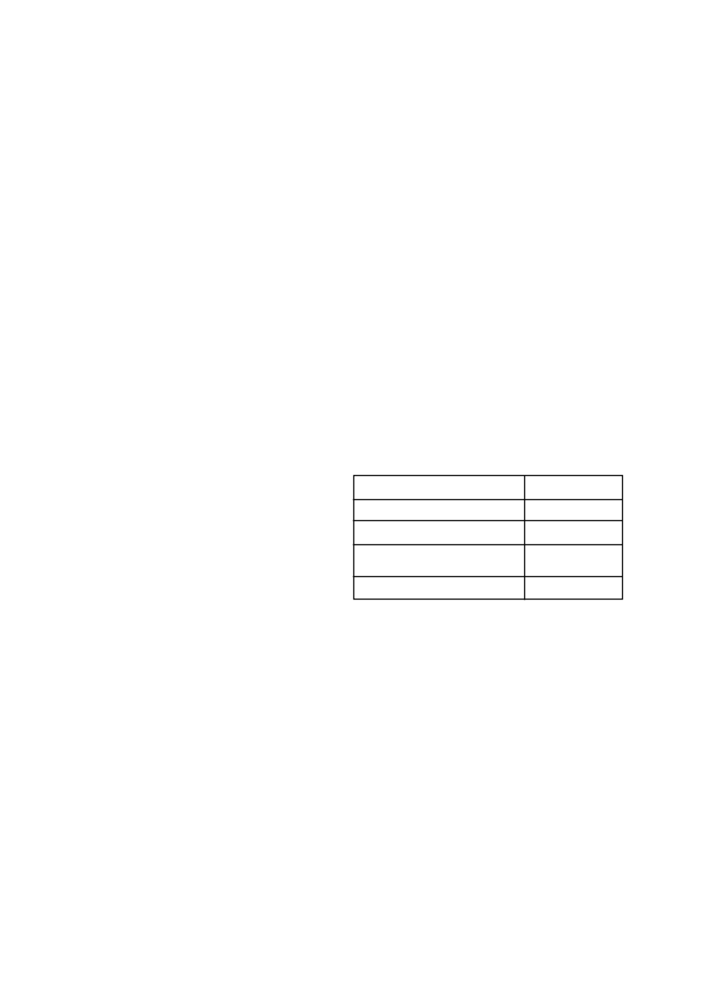

GT
is applied
a)
post-emergence in a tank mix with emulsifiable concen-
trate grass herbicides.
b)
post-emergence to maize crops that were treated with
soil insecticides containing organophosphate e.g. terbufos
or chlorpiryphos (see 11a & b below)
c)
foliar post-emergence in a tank mix with any organophos-
phate or carbamate insecticide.
12.
Do not
apply
HALEX GT
a)
within 28 days of a soil applied organophosphates (e.g.
terbufos) or carbamate insecticide had been applied at
planting
b)
in tank mixture with organophosphate(e.g. terbufos) or
carbamate (e.g. methomyl) insecticides for foliar applica-
tions or
c)
within 7 days before or within 7 days after organophos-
phate (e.g. terbufos) or carbamate (e.g. methomyl) or
carbamate insecticide for foliar applications
13.
Do not
cultivate maize within 7 days before or after an
HALEX GT
application as weed control from the
HALEX GT
application may be reduced.
14.
Do not
apply
HALEX GT
with suspension fertilizers or urea
ammonium nitrate (UAN) as the carrier.
15. To avoid contamination, it is recommended that the spray
system be thoroughly cleaned with water and a commercial
tank cleaner before and after each use.
4.2 Follow-on crops:
1.
If the maize crop is lost or destroyed following an application
of
HALEX GT
, follow the rotational guidelines below.
2.
If
HALEX GT
is applied sequentially or in a tank mix with
other herbicides, refer to the rotational guidelines on all other
herbicide labels and follow the most restrictive guidelines.
3.
The following waiting periods or rotational guidelines should
be adhered to:
Wheat and barley
1 month
Grain sorghum
2 months
Potatoes
6 months
Soybeans, dry beans, groundnuts,
9 months
sunflowers and cotton
All other crops
24 months
4.
All rotational crops should be planted only after thorough
cultivation. Since the product is metabolised by microbial
activity, periods of low microbial activity e.g. cold winters or
very dry summers might extend the residual activity of
HALEX
GT
.
Contact your local SYNGENTA representative to discuss
crop rotation and crop protection programmes to follow
before embarking on any pH adjustment programme.
4.3 Spray drift
1.
Avoid spray drift at all times to adjacent crops and especially
to adjacent non glyphosate tolerant crops.
2.
The interaction of equipment and weather related factors
determine the potential for spray drift. The applicator is
responsible for considering all these factors when making a
decision to apply.
3.
The pesticide should only be applied when the potential for
drift to adjacent sensitive areas, (e.g., residential areas, bodies
of water, known habitat for threatened or endangered spe-
cies, non-target crops) is minimal (e.g. when wind is blowing
away from the sensitive areas).
4.
Do not apply when weather conditions may cause drift to
non-target areas.
5.
The most effective way to reduce spray drift potential is to
apply large droplets that provide sufficient coverage and con-
trol. Applying larger droplets reduces drift potential, but will
not prevent drift if applications are made improperly or under
unfavourable environmental conditions.
HALEX GT
/ 2
HALEX GT
will control broadleaf weeds that are showing
increased tolerance or resistance to glyphosate.
HALEX GT
will not provide control of emerged grasses that are
resistant to glyphosate. For control of glyphosate resistant grass
weeds, a weed control program that includes pre-emergence
herbicides e.g. DUAL GOLD (L5749), GARDOMIL GOLD (L6246),
GESAPRIM SUPER (L3914), PRIMAGRAM GOLD (L7308),
CALLISTO (L6795), CAMIX (L8089) LEXAR (L8326) and CAMIX
PLUS (L8327) will reduce the dependence on glyphosate.
The best weed management practice includes the diversification
of glyphosate dependent weed control programs with alternative
mode of action herbicides or cultural practices.
1.
In glyphosate tolerant (GT) maize do not use more than two
applications of a glyphosate based herbicide in the same
season. Diversify with alternative mode of action herbicides
and/or cultural practices.
2.
Use alternative (non-glyphosate) burn down and/or residual
herbicides for GT crops likely to require more than one appli-
cation of glyphosate.
3.
To help manage GT resistant volunteers rotate GT crops with
conventional or non-GT crops.
4.
Use full labelled rates. Strive to get 100% control to prevent
resistance and minimize weed escapes.
5.
Monitor treated weed populations for any loss of field efficacy.
6.
Contact your local extension specialist, certified crop advisor,
and/or Syngenta representative for herbicide resistance man-
agement and/or integrated weed management recommenda-
tions.
Due to the fact that resistance weed populations vary in size and
localities and are difficult to ascertain, it is essential that each field
must be inspected annually to identify possible resistance early.
If the preventative measures discussed above are not strictly
adhered to
SYNGENTA
cannot be held responsible for the failure
of
HALEX GT
to control resistant weeds
For specific information on resistance management con-
tact the registration holder of this product.
4. USE RESTRICTIONS:
4.1 General
1.
Do not
use
HALEX GT
on inbred parent lines of maize
hybrids or newly released cultivars without first consulting with
your chemical supplier or with the seed company concerned.
2.
HALEX GT
can only be applied post-emergence to glypho-
sate tolerant (e.g. Roundup Ready
®
and Agrisure
®
GT) maize
only.
3.
An application of
HALEX GT
to a maize hybrid that is not
glyphosate tolerant will result in crop death.
4.
Do not
apply
HALEX GT
through any irrigation system.
5.
Do not
apply
HALEX GT
by aerial application.
6.
Disturbance of soil after both pre- and/or post-emergence
applications can result in re-germination of weeds resulting in
reduced weed control.
7.
When weeds are stressed due to drought, heat, lack of ferti-
lity, flooding, or prolonged cool temperatures, control can be
reduced or delayed since the weeds are not actively growing.
Weed escapes or re-growth may occur when application is
made under prolonged stress conditions. Optimum weed
control will be obtained if an application of
HALEX GT
is
made following label directions when weeds are actively
growing.
8
Crop injury may occur under extreme weather conditions or
when the crop is under stress due to inadequate or abnormal-
ly high moisture levels or extreme temperatures or extreme
temperature changes. Prolonged overcast conditions may
lead to temporary crop bleaching.
9.
If an activating rain (10 - 20 mm) is not received within 7 - 14
days after the post-emergence application of
HALEX GT
,
residual weed control will be reduced.
10. Avoid drift onto adjacent crops. Severe damage or destruc-
tion may be caused by contact of
HALEX GT
to any vege-
tation (including leaves, green stems, exposed non-woody
roots, or fruit) of crops, trees, and other desirable plants to
which treatment is not intended.
11. Severe maize injury resulting in yield loss may occur if
HALEX
